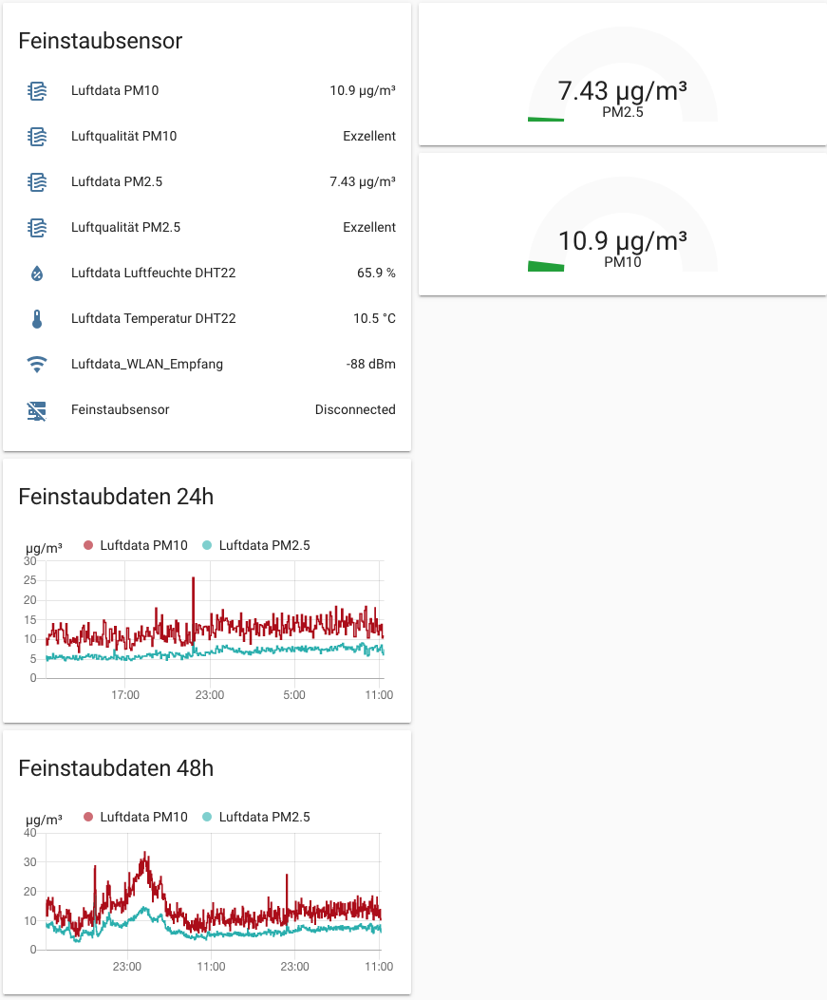

Feinstaubsensor mit ESP8266 und Home Assistant
Nachfolgend ein paar Infos wie man einen ESP8266-basierenden Feinstaubsensor nach Anleitung von Luftdaten.info in Home Assistant einbindet. Zusätzlich wird ein mögliches Gehäuse gezeigt da das Verstauen der Elektronik gezeigt.

benötigte Hardware
- ESP8266
- etwas Kabel
- etwas Schlauch (z.B. Aquarienschlauch für CO2)
- Feinstaubsensormodul SDS011
- (optionale weitere Sensoren), hier DHT22 für Temperatur und Luftfeuchte
- Gehäuse, hier eine Abzweigdose
Einrichtung
Die Einrichtung wird hier nicht beschrieben, siehe die Anleitungen unter Luftdaten.info
Home Assistant
Die Firmware von Luftdaten.info bietet auch eine lokale API-Schnittstelle die sich per Home-Assistant auslesen lässt.

Auszug configuration.yaml
- platform: command_line
name: "Luftdata PM10"
command: 'curl http://ipfeinstaubsensor/data.json'
value_template: "{{ value_json.sensordatavalues[0].value | round(2) }}"
unit_of_measurement: "µg/m³"
- platform: command_line
name: "Luftdata PM2.5"
command: 'curl http://ipfeinstaubsensor/data.json'
value_template: "{{ value_json.sensordatavalues[1].value | round(2) }}"
unit_of_measurement: "µg/m³"
- platform: command_line
name: "Luftdata Temperatur DHT22"
command: 'curl http://ipfeinstaubsensor/data.json'
value_template: "{{ value_json.sensordatavalues[2].value | round(1) }}"
unit_of_measurement: "°C"
- platform: command_line
name: "Luftdata Luftfeuchte DHT22"
command: 'curl http://ipfeinstaubsensor/data.json'
value_template: "{{ value_json.sensordatavalues[3].value | round(1) }}"
unit_of_measurement: "%"
- platform: command_line
name: "Luftdata_WLAN_Empfang"
command: 'curl http://ipfeinstaubsensor/data.json'
value_template: "{{ value_json.sensordatavalues[7].value | round(0) }}"
unit_of_measurement: "dBm"
- platform: statistics
name: pm10 stats
entity_id: sensor.luftdata_pm10
max_age:
minutes: 60
- platform: statistics
name: pm25 stats
entity_id: sensor.luftdata_pm2_5
max_age:
minutes: 60